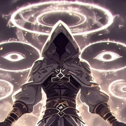
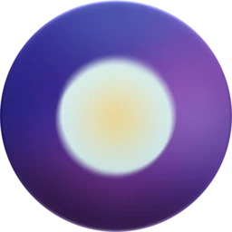
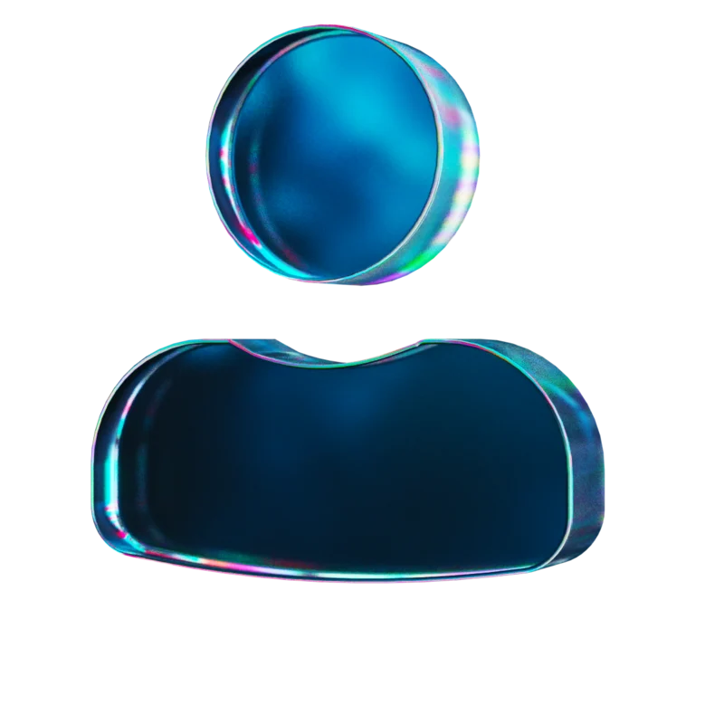
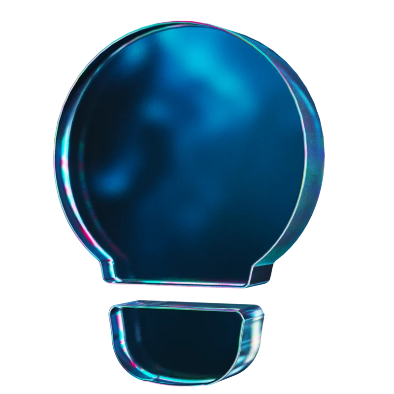
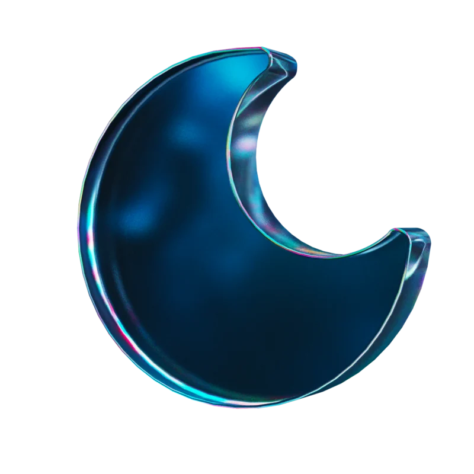
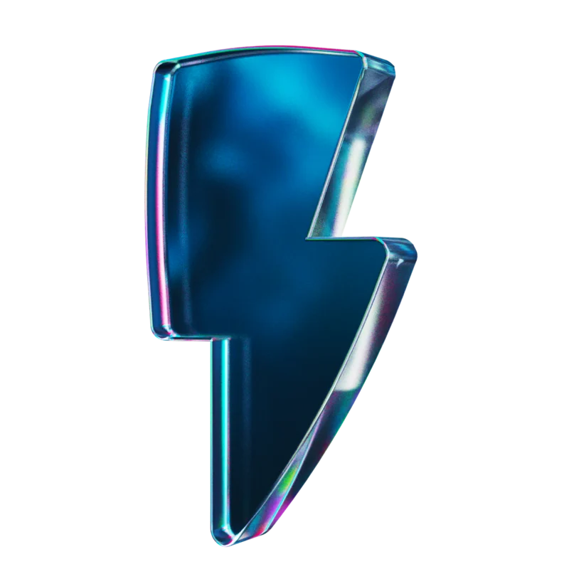
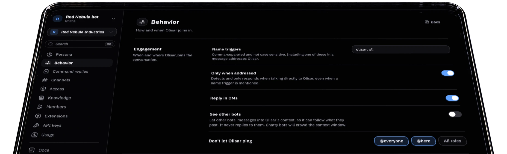

Give your server a member that remembers
Olisar is a self-hosted AI Discord bot that knows your server, remembers context, is fully customizable, and feels like a part of your community.
-
r
ren
boats should not flip that easily and i will die on this hill
-
j

jonahthe boats are fine. you keep driving them into rocks
-
k
kit
the rocks are part of the experience tbh
-
r
ren
the rocks are a design flaw
-
j
jonah
noted. filing that under not a bug
-
r
ren
anyway. olisar, did we ever decide how saving works
-
E

OlisarAPPjonah settled it in design(link to the message) on the 12th: autosave at every dock, manual saves anywhere else
-
k
kit
does anyone have the playtest build jonah posted? i’ve scrolled forever
-
E
OlisarAPP
jonah put it in playtest(link to the message) on tuesday, it’s build 0.4.2
-
k
kit
legend, ty
Olisar reacted with a thumbs-up:1 -
r
ren
are playtest clips ok to post or is that nda
-
E
OlisarAPP
clips are fine, just nothing past the lighthouse. that’s section 3 of the playtest rules
-
pixelwitch just slid into the server.
-
E
OlisarAPP
welcome pixelwitch! build and rules are in playtest. you’ve walked in on a very serious boat physics debate, pick a side whenever
-
m
mossy
back from a week off, what did i miss
-
E
OlisarAPP
tide patch shipped thursday, jonah wants feedback on the new reel sounds, and friday’s playtest moved to 7pm. also boats. you’ll hear about the boats
-
j
jonah
@Olisar remind everyone here an hour before friday’s playtest
-
E
OlisarAPP
done, i’ll post here friday at 6
Your bot

Customize everything
Give your Olisar a name, profile picture, and bio. You can also ask it to set its own status. A custom system prompt and style notes make Olisar talk the way you want in a unique persona.
Self-hosted shouldn’t mean overwhelming
All you need is to create a bot on the Discord Developer Portal, grab a Gemini API key, and the app does the rest.

Talks where you let it

Always on
On a server, 24/7
Set up a free Oracle Cloud VM or purchase cheap hosting from another provider to let Olisar stay on. A Linux machine with Docker works as well.
On this computer
Olisar can run entirely locally with almost no setup. It keeps running in the menu bar or system tray after you close the window.
On this computer, shared
Runs completely locally, but lets other admins access it via a free Tailscale link.
What Google sees
Its memory stays in one database on your computer or server. What it replies to goes through Gemini, and on the free tier Google may use that to improve its products. Turning on billing stops that, and the EEA, UK and Switzerland are exempt.

The Olisar console
Add extensions
Olisar extensions are toggleable packaged features that extend its functionality. Install them from the community marketplace or write your own with the TypeScript SDK.
Customize it all
Edit command replies, persona, and more. Members can see and change their privacy settings as well.
And everything else
Multi-bot switching, behavior tweaks, channel permissions, bot access, knowledge base and message index, member impressions, API keys, usage, and more.

Question and answer
Is it really free?
Olisar has no subscription. By default it runs on your Gemini key’s free tier, so the cost is a daily limit: once every model in its chain has hit its limit, it stops replying until midnight Pacific. Turning on billing for the key in Google AI Studio lifts the daily limit. Google then charges per use, and the console shows what it costs and can hold it to a monthly budget. Image generation is optional: it uses Gemini once billing is on, or a free Cloudflare key.
Does my computer have to stay on?
Only if that’s where Olisar runs. Closing the window keeps it running in the menu bar or system tray. To keep it online with your computer off, the app can set it up on a free Oracle Cloud server, or on any Linux machine with Docker.
Can one install run several servers, or several bots?
Both. A bot can join as many servers as you add it to, and you set it up for each one. The app can also run several bots at once, each with its own name, keys and data.
Does it run on Linux or an Intel Mac?
There’s no desktop app for either. On Linux you can run Olisar from source, and the desktop app can install it on a Linux server for you.
Can members see what it knows about them?
Yes. /privacy shows them what it keeps, /forget-me erases them, and the member portal lets them read and delete single facts. Members who opt out are never recorded.
Can I add my own commands?
Dice, a calculator and a concise mode come built in, and the console has a marketplace for more. You can write your own in TypeScript with the SDK; extensions run sandboxed.
Is the code public?
All of it, under the MIT license, on GitHub.